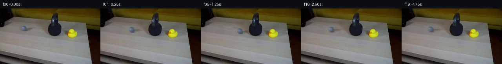

![首帧]()

Round 00
2026-11-05T20:34:25.333285+00:00像素候选变化代码 +180/−0inspection 更新
pixels 8ada97ca58f93d53 · code 2b3b90145cbe7132
查看本轮 generate.py 真实 diff
--- previous/generate.py
+++ current/generate.py
@@ -0,0 +1,180 @@
+"""Local source-pixel animation; no image viewer, model, or rendering engine."""
+from pathlib import Path
+import json
+import numpy as np
+from PIL import Image, ImageDraw
+from scipy.ndimage import gaussian_filter, map_coordinates
+from scipy.sparse import lil_matrix
+from scipy.sparse.linalg import spsolve
+from artifact_io import save
+
+ROOT = Path(__file__).resolve().parent
+SOURCE = np.array(Image.open(ROOT / 'first_frame.png').convert('RGB'))
+H, W = SOURCE.shape[:2]
+Y, X = np.mgrid[:H, :W].astype(float)
+C0 = np.array([61.4, 51.3])
+CONTACT_X = 116.2
+CONTACT_T = .75
+SLOPE = 10.0 / (CONTACT_X - C0[0])
+SPEED = (CONTACT_X - C0[0]) / CONTACT_T
+REBOUND = SPEED * .5
+FRICTION = 16.0
+STOP_T = CONTACT_T + REBOUND / FRICTION
+
+
+def reconstruct_wood():
+ """Poisson fill with grain gradients copied from wood 23 rows below."""
+ ball_hole = ((X-61.5)/10.7)**2 + ((Y-51.4)/9.0)**2 < 1
+ cast_hole = ((X-71.0)/15.8)**2 + ((Y-53.0)/6.6)**2 < 1
+ left_hole = ((X-53.0)/6.6)**2 + ((Y-51.7)/6.8)**2 < 1
+ hole = ball_hole | cast_hole | left_hole
+ coords = np.argwhere(hole)
+ ids = np.full((H, W), -1, dtype=int)
+ ids[hole] = np.arange(len(coords))
+ mat = lil_matrix((len(coords), len(coords)), dtype=float)
+ rhs = np.zeros((len(coords), 3))
+ # The donor is entirely on exposed wood, without any source object.
+ donor = SOURCE[np.minimum(np.arange(H)+23, H-1), :, :].astype(float)
+ for i, (y, x) in enumerate(coords):
+ mat[i, i] = 4
+ for yy, xx in ((y-1,x), (y+1,x), (y,x-1), (y,x+1)):
+ rhs[i] += donor[y,x] - donor[yy,xx]
+ if hole[yy,xx]:
+ mat[i, ids[yy,xx]] = -1
+ else:
+ rhs[i] += SOURCE[yy,xx]
+ base = SOURCE.astype(float).copy()
+ base[hole] = spsolve(mat.tocsr(), rhs)
+ return np.clip(base, 0, 255), hole
+
+BASE, HOLE = reconstruct_wood()
+
+
+def cast_shadow(cx, cy, scale=1.):
+ dx, dy = cx-C0[0], cy-C0[1]
+ # Broad cast shadow points right, as measured from the source image.
+ broad = np.exp(-.5*(((X-(73.0+dx))/(8.8*scale))**2 +
+ ((Y-(52.6+dy))/(2.05*scale))**2)) * .285
+ contact = np.exp(-.5*(((X-(63.5+dx))/(4.4*scale))**2 +
+ ((Y-(58.0+dy))/(.87*scale))**2)) * .28
+ return np.clip(broad + contact, 0, .48)
+
+
+def source_alpha():
+ # A slightly slanted ellipse preserves the photographed antialiased outline.
+ u = (X-C0[0]-.14*(Y-C0[1]))/7.8
+ v = (Y-C0[1])/7.6
+ dist = np.sqrt(u*u+v*v)
+ return np.clip((1.045-dist)*7.8/1.05, 0, 1)
+
+ALPHA = source_alpha()
+SHADOW0 = BASE * (1-cast_shadow(*C0)[..., None])
+# Undo edge mixing so resampled edges remain cool grey against new wood.
+FG = (SOURCE.astype(float)-(1-ALPHA[...,None])*SHADOW0) / np.maximum(ALPHA[...,None], .08)
+FG = np.clip(FG, 0, 255)
+# Smooth illumination stays tied to the light; only fine source texture rolls.
+SMOOTH = np.stack([gaussian_filter(FG[:,:,c]*ALPHA, .65) /
+ np.maximum(gaussian_filter(ALPHA,.65),.02) for c in range(3)], axis=-1)
+RESIDUAL = (FG-SMOOTH)*ALPHA[...,None]
+
+
+def pose(t):
+ if t <= CONTACT_T:
+ cx = C0[0] + SPEED*t
+ else:
+ tau = min(t-CONTACT_T, REBOUND/FRICTION)
+ cx = CONTACT_X - REBOUND*tau + .5*FRICTION*tau*tau
+ cy = C0[1] + SLOPE*(cx-C0[0])
… diff truncated; 93 more lines …